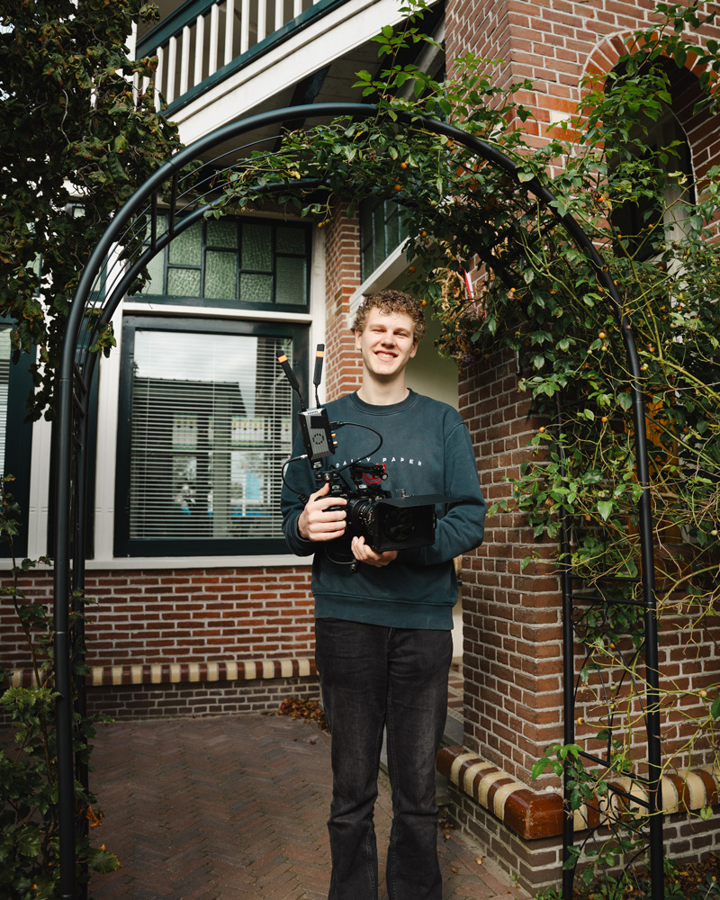

About me

Mijn passie voor video komt door het kijken van films.
My education
I study Film- en videomaker (AV-specialist) at Firda. Op dit moment zit ik in jaar 3, en heb vorig jaar stage gelopen bij Editz.
Skills
- Filming and lighting
- Editing Premiere, Aftereffects
- Sound and interviews
Gear
- Camera: Sony α6500
- Lenses